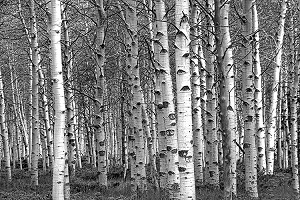

Birch
A birch is a thin-leaved deciduous hardwood tree of the genus Betula (/ˈbɛtjʊlə/), in the family Betulaceae, which also includes alders, hazels, and hornbeams. It is closely related to the beech-oak family Fagaceae. The genus Betula contains 30 to 60 known taxa of which 11 are on the IUCN 2011 Red List of Threatened Species. They are a typically rather short-lived pioneer species widespread in the Northern Hemisphere, particularly in northern areas of temperate climates and in boreal climates.
